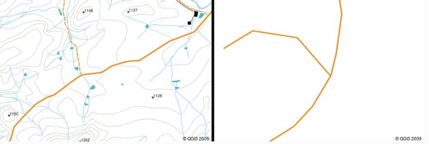
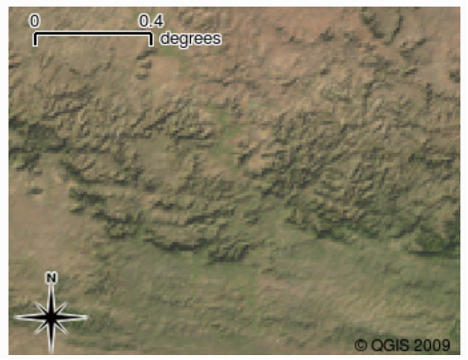
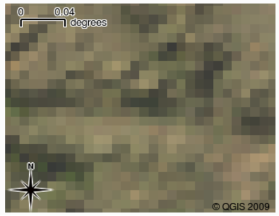

Při práci s daty dálkového průzkumu Země se setkáváme se dvěma základními typy prostorových dat – vektorovými a rastrovými. Každý z těchto typů má jiné vlastnosti, využití i způsob ukládání a zobrazení. Porozumění rozdílům mezi nimi je klíčové pro správnou analýzu a interpretaci dat DPZ.
Vektorová data slouží k reprezentaci konkrétních objektů z reálného světa pomocí souřadnic. Jsou popisována pomocí bodů, linií a ploch, které jsou definovány souřadnicemi x, y (a v některých případech i výškou nebo hloubkou – tzv. 2.5D).
Pomocí vektorových dat lze zobrazovat například:
Každý vektorový prvek může mít přiřazené atributy, tedy popisné informace v podobě textových nebo číselných hodnot (např. název, typ objektu, výška, plocha).
Vektorová data se často ukládají ve formátu Shapefile, který se skládá z několika souborů:
Kromě souborů mohou být vektorová data ukládána také do databází, což umožňuje efektivní práci s velkými objemy dat a současný přístup více uživatelů ke stejným datovým vrstvám.

Rastrová data jsou ukládána ve formě pravidelné mřížky (gridu), která se skládá z jednotlivých pixelů. Každý pixel nese informaci o hodnotě sledovaného jevu v daném místě – například intenzitu odrazu záření, teplotu povrchu nebo výšku terénu.
Rastrová data se využívají zejména pro zobrazení spojitých jevů, které nelze snadno rozdělit na jednotlivé objekty, například:
Nejčastějším zdrojem rastrových dat jsou satelity dálkového průzkumu Země a letecké snímkování. Typickou vlastností rastrových dat je jejich závislost na rozlišení – při přiblížení mohou být jednotlivé pixely viditelné a obraz může působit „kostičkovaně“ nebo rozmazaně.

